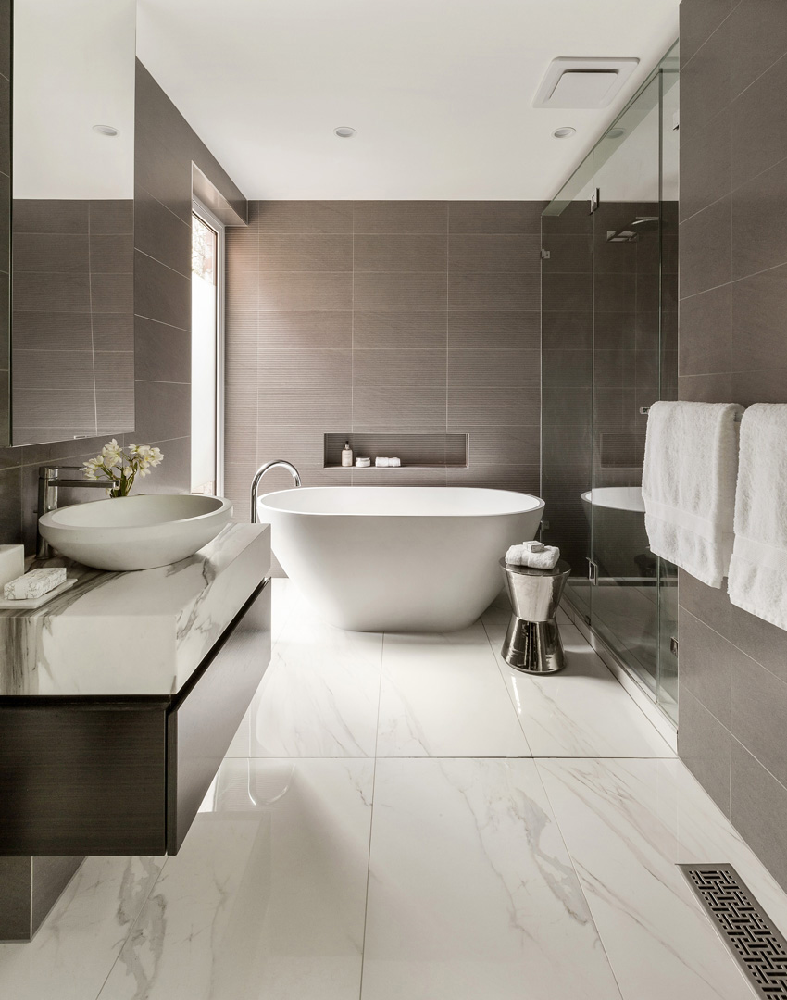
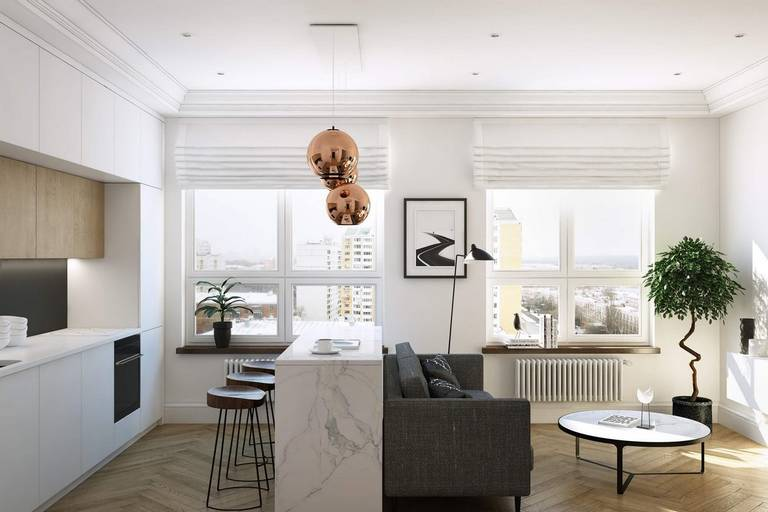
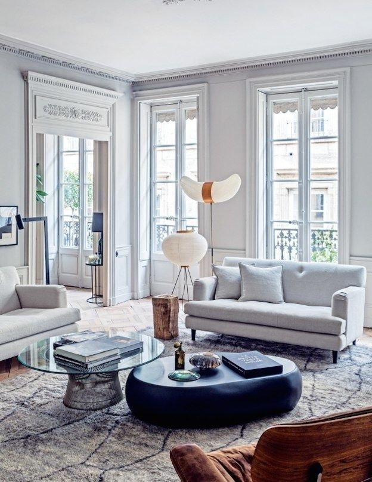
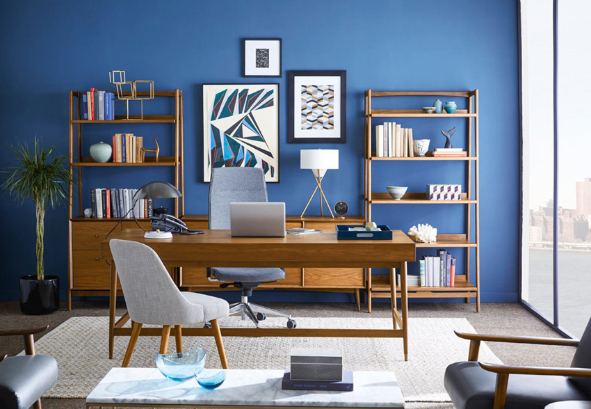

COMPLETED RESIDENTIAL INTERIOR PROJECTS




A quality renovation always starts with a detailed design project. This is a time-consuming process, since the creation of a room project includes a lot of stages. Our team approaches this task with all responsibility, since in addition to visual harmony and originality, the space must be correctly zoned and functional.
The interior is an inseparable part of architecture; it is the interior space of the building, as well as the decoration of the premises. The history of the interior begins with the history of human settlements. But the interior is also an inseparable part of our life. At home and at work, in shops and cinemas, in a sanatorium and in a hotel, and even in the subway - everywhere we are surrounded by the interior. Its tasks can be completely varied. He can delight, delight, shock, or soothe. The main thing is he gives emotions to people. Well thought out, interesting, unusual interior will not leave anyone indifferent.